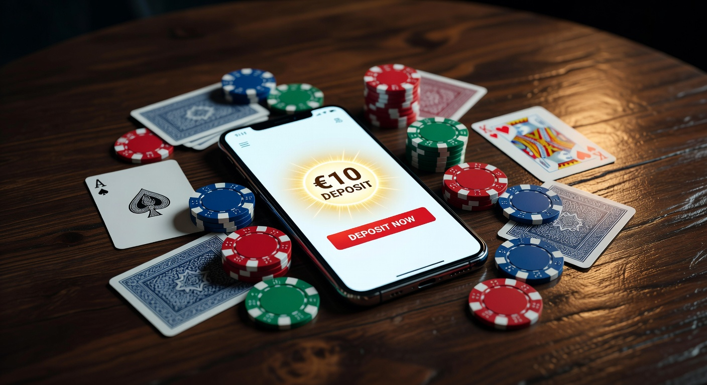
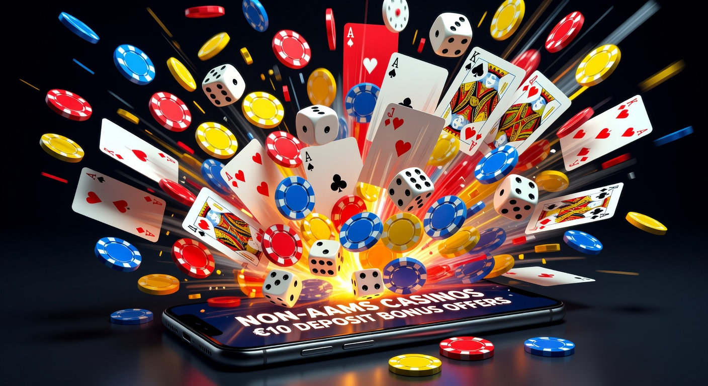

Casinò non AAMS deposito 10 euro: guida ai migliori siti stranieri
Il panorama del gioco d'azzardo online in Italia ha subito una trasformazione radicale nel corso del 2026. Gli utenti sono sempre più alla ricerca di flessibilità, varietà di gioco e, soprattutto, barriere d'ingresso contenute. In questo contesto, il concetto di casinò non AAMS deposito 10 euro è diventato un punto di riferimento per migliaia di appassionati che desiderano esplorare piattaforme internazionali senza dover investire capitali ingenti fin dal primo approccio.
Scegliere un casinò non AAMS deposito 10 euro significa interfacciarsi con operatori che possiedono licenze rilasciate da autorità estere come la Malta Gaming Authority (MGA) o la Curacao eGaming. Queste giurisdizioni permettono una gestione più snella dei flussi finanziari, garantendo al contempo standard di sicurezza elevatissimi, monitorati attraverso algoritmi di RNG (Random Number Generator) costantemente certificati da laboratori indipendenti. Nel 2026, la tecnologia blockchain ha ulteriormente blindato la trasparenza di questi siti.
In questa guida completa, analizzeremo ogni aspetto relativo a questa specifica categoria di siti. Vedremo come un casinò non AAMS deposito 10 euro possa offrire un'esperienza di gioco superiore rispetto ai circuiti locali, grazie a cataloghi che superano spesso i 5.000 titoli, includendo le ultime innovazioni nel campo delle slot machine e dei tavoli live gestiti da colossi come Evolution Gaming. Entrare nel mondo del gioco internazionale con una ricarica minima è oggi la strategia preferita dai giocatori esperti.
Navigare tra le diverse offerte richiede però una certa competenza tecnica e una conoscenza approfondita dei termini e delle condizioni. Ogni casinò non AAMS deposito 10 euro presenta caratteristiche uniche, che vanno dai bonus di benvenuto alle velocità di prelievo. Esploreremo insieme le migliori opzioni disponibili sul mercato attuale, fornendo strumenti critici per valutare l'affidabilità di ogni singola piattaforma attiva in questo dinamico 2026.
Perché scegliere i casinò non AAMS deposito 10 euro
La preferenza verso un casinò non AAMS deposito 10 euro non è dettata solo dalla volontà di risparmiare, ma da una serie di vantaggi strutturali che le piattaforme estere offrono rispetto a quelle con licenza ADM. Il primo grande vantaggio risiede nella libertà operativa. Questi siti non devono sottostare alle rigide limitazioni imposte dal regolatore italiano in termini di importi massimi di scommessa o limiti alle promozioni marketing, il che si traduce in offerte più competitive per l'utente finale.
Un altro motivo fondamentale per optare per un casinò non AAMS deposito 10 euro è la velocità burocratica. Mentre i siti locali richiedono spesso processi di verifica lunghi e tediose procedure di invio documenti prima ancora di poter effettuare il primo versamento, i portali internazionali hanno ottimizzato il processo KYC (Know Your Customer) per essere rapido e non invasivo, permettendo di iniziare a giocare quasi istantaneamente dopo la ricarica.
La varietà del software è un ulteriore pilastro. Un casinò non AAMS deposito 10 euro collabora tipicamente con un numero maggiore di provider rispetto ai siti nazionali. Oltre ai classici Netent e Playtech, su queste piattaforme è possibile trovare gemme nascoste di piccoli studi di sviluppo che puntano tutto sull'innovazione meccanica e grafica, offrendo un'esperienza di gioco fresca e mai ripetitiva.
Infine, la gestione dei pagamenti è molto più elastica. In un casinò non AAMS deposito 10 euro è possibile utilizzare una pletora di metodi di pagamento che includono non solo le classiche carte di credito, ma anche soluzioni all'avanguardia come le valute digitali. La possibilità di ricaricare il proprio conto gioco utilizzando Bitcoin o altre stablecoin è un plus che molti utenti considerano ormai indispensabile nel 2026 per mantenere la propria privacy finanziaria.
Accesso a bonus di benvenuto più generosi
Uno degli aspetti più allettanti di un casinò non AAMS deposito 10 euro è senza dubbio la politica promozionale. Con un versamento così esiguo, molti operatori offrono moltiplicatori del deposito che possono arrivare al 200% o 300%. Questo significa che con soli 10 euro, il saldo disponibile per giocare può triplicare istantaneamente, offrendo molte più chance di vittoria e un tempo di gioco prolungato.
Oltre alla percentuale di ricarica, il casinò con deposito minimo straniero include spesso nel pacchetto di benvenuto una serie di giri gratis utilizzabili sulle slot più popolari del momento. Questi free spins rappresentano un valore aggiunto enorme, poiché permettono di testare la piattaforma e i suoi giochi senza intaccare il capitale reale versato, mantenendo comunque la possibilità di convertire le vincite in denaro prelevabile una volta soddisfatti i requisiti di puntata.
Limiti di gioco e prelievo flessibili
La flessibilità è il mantra del 2026. In un casinò non AAMS deposito 10 euro, i limiti sono pensati per accomodare sia il giocatore occasionale che il professionista. Non è raro trovare tavoli di blackjack o roulette dove la puntata minima parte da pochi centesimi, permettendo una gestione del bankroll estremamente granulare anche con un deposito ridotto. Questa democratizzazione del gioco è uno dei punti di forza di tali piattaforme.
Parallelamente, anche le politiche di prelievo sono decisamente più amichevoli. Spesso, un casinò non AAMS deposito 10 euro permette di ritirare le vincite partendo da soglie molto basse, evitando che il giocatore sia costretto a continuare a scommettere solo perché non ha raggiunto il limite minimo di prelievo. Questa trasparenza finanziaria costruisce un rapporto di fiducia solido tra l'utente e l'operatore internazionale.
Classifica dei top casinò con ricarica minima 10€

Per aiutarvi nella scelta, abbiamo selezionato i migliori operatori che accettano ricariche contenute garantendo standard di eccellenza. Ogni casinò non AAMS deposito 10 euro presente in questa lista è stato testato dal nostro team di esperti per sicurezza, velocità dei pagamenti e qualità del supporto clienti. Nel 2026, la competizione è altissima e solo i migliori riescono a distinguersi per trasparenza e innovazione.
Tra i nomi di spicco troviamo Millioner, una piattaforma che ha rivoluzionato il concetto di gamification. Questo casinò non AAMS deposito 10 euro offre un sistema di fedeltà unico, dove ogni giocata permette di scalare livelli e sbloccare ricompense immediate, rendendo ogni sessione di gioco un'avventura a premi.
Un'altra opzione eccellente è rappresentata da Roulettino. Come suggerisce il nome, questo operatore è il paradiso per gli amanti dei giochi da tavolo. In questo casinò non AAMS deposito 10 euro, troverete decine di varianti di roulette, dalle classiche europee alle versioni futuristiche con moltiplicatori casuali, tutte accessibili con un budget iniziale ridotto.
Di seguito, presentiamo una tabella comparativa per visualizzare rapidamente le caratteristiche principali dei leader di mercato nel 2026:
| Brand | Bonus Benvenuto | Giri Gratis | Punto di Forza | Link |
|---|---|---|---|---|
| Millioner | 200% fino a 500€ | 100 FS | Gamification avanzata | Visita Millioner |
| Roulettino | 150% fino a 300€ | 50 FS | Ampia scelta di Live Roulette | Visita Roulettino |
| Wyns | 100% fino a 1000€ | 200 FS | Integrazione scommesse sport | Visita Wyns |
| Kinbet | Bonus Cashback 20% | N/A | Ideale per amanti Crypto | Visita Kinbet |
| Dragonia | Pack fino a 1500€ | 150 FS | Interfaccia immersiva 3D | Visita Dragonia |
Continuando l'analisi, Wyns si posiziona come il casinò non AAMS deposito 10 euro perfetto per chi non vuole rinunciare alle scommesse sportive. Con un unico account e un versamento minimo, è possibile passare dalle slot machine ai mercati calcistici internazionali in un solo clic, godendo di quote spesso superiori alla media italiana.
Per chi invece cerca un'esperienza puramente dedicata alle slot e al divertimento rapido, Divaspin è la scelta consigliata. Questo specifico casinò non AAMS deposito 10 euro punta tutto sulla velocità dell'interfaccia mobile, permettendo di giocare fluidamente da qualsiasi smartphone senza cali di frame, un dettaglio fondamentale per chi gioca in mobilità nel 2026.
Cosa definisce un sito di gioco internazionale?
Un sito di gioco internazionale, o casinò non AAMS deposito 10 euro, è una piattaforma che opera sotto licenze non rilasciate dallo Stato Italiano. Questo non significa che sia illegale, ma semplicemente che risponde a normative diverse. Le licenze di Curacao, ad esempio, sono tra le più comuni nel 2026 poiché permettono agli operatori di accettare Bitcoin e altre criptovalute, offrendo una libertà che le licenze ADM ancora faticano a integrare completamente.
La natura internazionale di un casinò non AAMS deposito 10 euro si riflette anche nel suo raggio d'azione globale. Questi siti servono utenti da ogni parte del mondo, il che li spinge a mantenere standard tecnologici all'avanguardia per rimanere competitivi. La sicurezza dei dati è garantita da protocolli di crittografia SSL di ultima generazione, assicurando che ogni transazione finanziaria e ogni dato personale inserito durante la fase di KYC siano protetti da accessi non autorizzati.
Inoltre, l'internazionalità si traduce in un supporto clienti multilingue disponibile 24/7. In un casinò non AAMS deposito 10 euro di alto livello, è normale trovare chat dal vivo gestite da operatori umani (o AI conversazionali avanzate nel 2026) pronti a risolvere dubbi in italiano, inglese o spagnolo in tempo reale. Questo abbatte le barriere geografiche e fa sentire il giocatore assistito in ogni momento della sua esperienza.
Un altro elemento distintivo è la trasparenza sui payout. Ogni casinò non AAMS deposito 10 euro degno di nota pubblica regolarmente le percentuali di ritorno al giocatore (RTP) dei suoi titoli. La presenza del sigillo di garanzia di enti come eCOGRA o iTech Labs è un ulteriore certificato di correttezza, assicurando che l'algoritmo RNG non sia manipolato e che le probabilità di vincita siano esattamente quelle dichiarate dai produttori del software.
Come scegliere un casinò non AAMS deposito 10 euro affidabile
Valutare un casinò non AAMS deposito 10 euro richiede occhio critico. Il primo passo è sempre il controllo della licenza. Scorrete fino al footer (la parte bassa) del sito: lì deve essere presente il logo dell'autorità di gioco e il numero di licenza cliccabile. Un casinò non AAMS deposito 10 euro onesto non nasconde mai le proprie autorizzazioni e permette la verifica immediata dello stato della licenza presso il sito dell'ente regolatore.
Successivamente, è fondamentale analizzare i termini dei bonus. Un casinò non AAMS deposito 10 euro potrebbe offrire cifre astronomiche, ma se i requisiti di scommessa (wagering) sono impossibili da raggiungere (es. 70x), il bonus perde valore. Noi consigliamo di cercare piattaforme con requisiti tra il 30x e il 40x, che rappresentano lo standard di mercato equo per il 2026. Leggete sempre attentamente quali giochi contribuiscono al soddisfacimento del requisito.
La varietà dei metodi di pagamento è un altro indicatore di affidabilità. Un solido casinò non AAMS deposito 10 euro dovrebbe offrire una combinazione di opzioni tradizionali e moderne. Se vedete loghi di circuiti internazionali come Visa e Mastercard, insieme a portafogli elettronici famosi, significa che gli istituti finanziari hanno stretto accordi con l'operatore, il che è un ottimo segno di stabilità e fiducia commerciale.
Infine, cercate recensioni indipendenti e feedback degli utenti. Nel 2026, le community online sono molto attive nel segnalare eventuali ritardi nei pagamenti o comportamenti poco chiari. Un casinò non AAMS deposito 10 euro con una buona reputazione storica è quasi sempre una scelta sicura. Non fermatevi alla superficie: scavate nei forum di settore per capire come l'operatore gestisce i grandi prelievi e le dispute tecniche.
Tipologie di bonus nei casinò non AAMS deposito 10 euro

L'offerta promozionale in un casinò non AAMS deposito 10 euro è estremamente variegata. Non si limita al solo bonus di benvenuto, ma si estende a tutto il ciclo di vita del giocatore sulla piattaforma. Le promozioni sono lo strumento principale che questi siti usano per fidelizzare l'utenza in un mercato globale saturo. Vediamo nel dettaglio quali sono le opportunità più frequenti che potrete incontrare ricaricando soli dieci euro.
Molti operatori offrono il cosiddetto "Reload Bonus". Si tratta di un incentivo per i depositi successivi al primo. Ad esempio, un casinò non AAMS deposito 10 euro potrebbe offrire un bonus del 50% ogni venerdì per preparare i giocatori al weekend. Questo assicura che anche i piccoli versamenti ricevano sempre un "boost" extra, aumentando il valore percepito di ogni singola transazione effettuata dall'utente.
Un'altra tipologia molto apprezzata nel 2026 è il Cashback. In questo caso, il casinò non AAMS deposito 10 euro restituisce una percentuale delle perdite nette subite dal giocatore in un determinato periodo (solitamente una settimana o un mese). È una sorta di assicurazione sulla scommessa che permette di recuperare parte del budget per tentare nuovamente la fortuna, rendendo l'esperienza di gioco meno stressante e più sostenibile nel lungo periodo.
Infine, non dimentichiamo i programmi fedeltà o VIP. Anche iniziando con un casinò non AAMS deposito 10 euro, è possibile accumulare punti che possono essere convertiti in bonus reali, gadget tecnologici o persino inviti ad eventi esclusivi. La filosofia del 2026 è che ogni giocatore merita un trattamento speciale, indipendentemente dall'entità del suo deposito iniziale, e le piattaforme internazionali eccellono proprio in questo approccio personalizzato.
Giri gratis e free spins per le slot
I giri gratis sono il cuore pulsante delle promozioni in qualsiasi casinò non AAMS deposito 10 euro. Spesso, questi vengono erogati su titoli specifici appena lanciati dai provider per incentivarne la prova. Ricevere 50 o 100 free spins con una ricarica di 10 euro è una pratica comune che permette di accumulare vincite consistenti ancor prima di toccare il credito reale depositato.
È importante notare che nel 2026 molti casinò internazionali hanno iniziato a offrire "Wager-Free Spins", ovvero giri gratis le cui vincite non sono soggette a requisiti di puntata. Sebbene siano più rari, trovarli in un casinò non AAMS deposito 10 euro rappresenta il massimo della convenienza, poiché tutto ciò che si vince viene accreditato direttamente nel saldo prelevabile, un vantaggio enorme per chi gioca con budget contenuti.
Bonus sul primo versamento
Il bonus sul primo versamento è il biglietto da visita di ogni casinò non AAMS deposito 10 euro. Solitamente si presenta sotto forma di percentuale: "100% fino a X euro". Con un versamento di 10 euro, riceverete altri 10 euro di bonus, portando il totale a 20 euro. Alcuni siti più aggressivi arrivano a offrire il 200%, trasformando i vostri 10 euro iniziali in 30 euro pronti all'uso su slot e tavoli verdi.
Bisogna però sempre controllare la "validità" del bonus. In un casinò non AAMS deposito 10 euro, avrete solitamente tra i 7 e i 30 giorni per completare il wagering. Organizzate le vostre sessioni di gioco in base a questa scadenza per non rischiare di vedere annullato il bonus e le vincite da esso derivate proprio quando siete vicini a sbloccarlo completamente.
Vantaggi dei casinò non AAMS deposito 10 euro nel 2026
Il 2026 ha consolidato il successo del casinò non AAMS deposito 10 euro come scelta primaria per il giocatore moderno. Uno dei vantaggi principali è l'accesso a tecnologie di gioco innovative come il VR Casino (Casinò in Realtà Virtuale). Molte piattaforme internazionali permettono di immergersi in una sala da gioco 3D con il proprio visore, offrendo un livello di realismo che i siti tradizionali non sono ancora riusciti a replicare su vasta scala.
Un altro vantaggio è l'assenza di limitazioni sul software. Mentre i siti ADM devono certificare singolarmente ogni gioco che entra in catalogo, un casinò non AAMS deposito 10 euro può integrare istantaneamente le ultime novità dei provider globali. Questo significa che se Netent rilascia una nuova slot rivoluzionaria, potrete giocarci il giorno stesso del lancio mondiale, senza attendere mesi per le approvazioni burocratiche locali.
La privacy è un altro punto cardine. Molti utenti nel 2026 preferiscono che le loro attività di svago non compaiano direttamente negli estratti conto bancari tradizionali. Un casinò non AAMS deposito 10 euro che accetta criptovalute o portafogli elettronici anonimi permette di mantenere una separazione netta tra le finanze personali e il gioco, garantendo una discrezione che molti ritengono fondamentale per la propria libertà digitale.
Infine, la competizione globale gioca a favore dell'utente. Essendo attivi in un mercato mondiale, ogni casinò non AAMS deposito 10 euro deve lottare per ogni singolo giocatore. Questo si traduce in un miglioramento costante della qualità: app mobili sempre più veloci, interfacce utente studiate da esperti di UX e programmi di ricompense sempre più generosi. In breve, il giocatore ha il coltello dalla parte del manico e può pretendere standard elevatissimi anche con un investimento di soli 10 euro.
Limiti e restrizioni dei casinò non AAMS deposito 10 euro
Sebbene i vantaggi siano numerosi, è onesto analizzare anche i limiti di un casinò non AAMS deposito 10 euro. Il limite principale è spesso legato ai metodi di prelievo. Alcuni operatori internazionali, per combattere il riciclaggio di denaro, richiedono che il prelievo avvenga con lo stesso metodo usato per il deposito. Se avete depositato 10 euro con una carta prepagata usa e getta, potreste riscontrare difficoltà nel ritirare le vincite se non avete un metodo alternativo verificato.
Un'altra restrizione comune in un casinò non AAMS deposito 10 euro riguarda i giochi contribuenti al bonus. Spesso, i giochi da tavolo come il blackjack o il baccarat contribuiscono solo al 5% o 10% al raggiungimento dei requisiti di scommessa, oppure sono del tutto esclusi. Questo significa che se siete amanti dei giochi di strategia, dovrete faticare molto di più per sbloccare un bonus rispetto a chi gioca alle slot machine.
Inoltre, bisogna considerare i limiti geografici. Nonostante siano siti internazionali, alcuni casinò con deposito minimo potrebbero limitare l'accesso a determinati provider di giochi agli utenti residenti in Italia a causa di accordi commerciali. Anche in un casinò non AAMS deposito 10 euro, potreste accorgervi che alcuni titoli famosi di Playtech non sono caricabili, ma solitamente vengono sostituiti da migliaia di altre opzioni altrettanto valide.
Infine, c'è la questione della tutela legale. In caso di controversie gravi con un casinò non AAMS deposito 10 euro, non potrete rivolgervi all'autorità italiana per la risoluzione. Dovrete interfacciarvi con l'autorità che ha rilasciato la licenza (es. Curacao). Sebbene nel 2026 queste autorità siano molto più responsive che in passato, il processo può essere più complesso e richiedere comunicazioni in lingua inglese, un fattore da tenere presente quando si sceglie un operatore estero.
Metodi di pagamento per depositi contenuti
La scelta del metodo di ricarica in un casinò non AAMS deposito 10 euro è fondamentale per ottimizzare i costi. Alcuni metodi possono applicare piccole commissioni che, su una ricarica di 10 euro, avrebbero un impatto percentuale significativo. Nel 2026, i giocatori più accorti utilizzano sistemi che garantiscono transazioni gratuite e istantanee, massimizzando ogni centesimo del proprio budget di gioco.
Un'ottima alternativa per chi cerca ancora più accessibilità è consultare la guida sui casinò non aams deposito 1 euro, che permette di testare le piattaforme con un rischio quasi nullo. Tuttavia, il casinò non AAMS deposito 10 euro rimane lo standard per chi vuole effettivamente attivare i bonus di benvenuto, che solitamente richiedono questa soglia minima per essere erogati.
Oltre alle soluzioni digitali, molti siti internazionali hanno iniziato ad accettare voucher prepagati acquistabili anche fisicamente, che garantiscono un anonimato totale. La flessibilità finanziaria è ciò che rende un casinò non AAMS deposito 10 euro così attraente per una vasta gamma di profili di giocatori, dal neofita che vuole solo divertirsi per un'ora al veterano che sta testando una nuova strategia di puntata sulle slot.
È importante verificare anche i tempi di elaborazione. Mentre i depositi in un casinò non AAMS deposito 10 euro sono quasi sempre immediati, i prelievi possono variare. Nel 2026, lo standard per i siti top è il pagamento entro 24 ore, ma l'utilizzo di criptovalute può ridurre questo tempo a pochi minuti, offrendo una gratificazione quasi istantanea dopo una vincita fortunata.
Criptovalute e portafogli elettronici
Le criptovalute sono diventate il metodo principe per i frequentatori di ogni casinò non AAMS deposito 10 euro nel 2026. Bitcoin, Ethereum e Litecoin sono accettati quasi ovunque, ma sono le stablecoin come USDT ad aver preso il sopravvento per la loro stabilità di valore. Depositare 10 euro in crypto significa non dipendere dai tempi delle banche e godere spesso di bonus esclusivi dedicati a chi usa queste tecnologie.
I portafogli elettronici (e-wallets) come Revolut, MuchBetter o Jeton rimangono pilastri fondamentali per il casinò non AAMS deposito 10 euro. Offrono un livello di protezione extra, agendo da cuscinetto tra la vostra banca principale e il sito di gioco. Inoltre, la facilità di gestione tramite app rende l'esperienza di ricarica fluida e veloce, ideale per chi gioca da smartphone e desidera un controllo totale sulle proprie spese in tempo reale.
Carte di credito internazionali
Nonostante l'avanzata delle nuove tecnologie, le carte di credito Visa e Mastercard restano il metodo più utilizzato nel casinò non AAMS deposito 10 euro per la loro universalità. Quasi tutti possiedono una carta e il processo di deposito è familiare a chiunque abbia mai fatto acquisti online. La sicurezza è garantita dai protocolli 3D Secure, che richiedono un'approvazione tramite app o SMS per ogni transazione.
Tuttavia, bisogna prestare attenzione alle politiche della propria banca. Alcuni istituti di credito italiani potrebbero bloccare transazioni dirette verso un casinò non AAMS deposito 10 euro per policy interne. In questi casi, collegare la carta a un portafoglio elettronico come Paypal (dove disponibile) o utilizzare una carta prepagata internazionale è la soluzione più semplice per aggirare l'ostacolo e iniziare a giocare senza intoppi.
Le migliori slot machine per budget di 10€
Con un budget limitato in un casinò non AAMS deposito 10 euro, la scelta del gioco è cruciale. Non tutte le slot sono uguali: alcune sono progettate per pagare piccole somme frequentemente (bassa volatilità), mentre altre offrono vincite enormi ma raramente (alta volatilità). Per una ricarica da 10 euro, le slot a bassa o media volatilità sono generalmente preferibili, poiché permettono di estendere la sessione di gioco e accumulare piccoli premi che mantengono vivo il saldo.
Titoli iconici di Netent come Starburst rimangono dei classici intramontabili in ogni casinò non AAMS deposito 10 euro. Grazie alla sua meccanica semplice e ai pagamenti bidirezionali, permette di giocare a lungo anche con puntate minime di 0,10€. Un'altra opzione eccellente sono le slot con meccanica "Book of...", dove la funzione di giri gratis può trasformare una puntata minima in una vincita significativa grazie ai simboli espandibili.
Nel 2026, sono diventate popolari anche le slot "Instant Win" o "Crash Games" all'interno di ogni casinò non AAMS deposito 10 euro. Giochi come Aviator permettono di decidere quando incassare la vincita mentre un moltiplicatore sale. Con 10 euro, è possibile fare molte piccole puntate, cercando di uscire presto per accumulare costantemente piccoli profitti, una strategia perfetta per chi ama il controllo e l'adrenalina rapida.
Infine, prestate sempre attenzione all'RTP (Return to Player). In un casinò non AAMS deposito 10 euro di qualità, troverete molti titoli con un RTP superiore al 96%. Evitate le slot con jackpot progressivi se il vostro budget è limitato, poiché una parte di ogni puntata va a rimpinguare il jackpot globale, riducendo le probabilità di vincita nelle giocate standard. Puntate sulla costanza per massimizzare il divertimento.
Sicurezza nei casinò non AAMS deposito 10 euro
La sicurezza è la preoccupazione principale per chi si avvicina a un casinò non AAMS deposito 10 euro. Nel 2026, la protezione cibernetica ha raggiunto livelli incredibili. Le piattaforme utilizzano l'intelligenza artificiale per monitorare i pattern di gioco e individuare tentativi di frode o intrusioni negli account in tempo reale. Ogni casinò non AAMS deposito 10 euro serio investe milioni in infrastrutture server protette da firewall di livello militare.
Un altro aspetto fondamentale della sicurezza riguarda l'integrità del gioco. Il sistema RNG (generatore di numeri casuali) assicura che ogni giro di slot o ogni carta distribuita sia totalmente imprevedibile e non manipolabile. Nei casinò internazionali, questi sistemi sono regolarmente verificati da enti terzi come iTech Labs, che rilasciano certificazioni pubbliche visualizzabili sul sito dell'operatore. Un casinò non AAMS deposito 10 euro trasparente non ha nulla da nascondere riguardo alla correttezza dei propri algoritmi.
La protezione dei fondi è parimenti garantita. Per legge (nelle giurisdizioni serie come Malta), un casinò non AAMS deposito 10 euro deve tenere i fondi dei giocatori in conti bancari separati da quelli operativi della società. Questo significa che, anche in caso di difficoltà finanziarie dell'operatore, il vostro saldo è protetto e può essere rimborsato. Questa "segregazione dei conti" è un requisito fondamentale che verifichiamo sempre nelle nostre recensioni.
Infine, il processo KYC (Know Your Customer), seppur talvolta percepito come un fastidio, è in realtà la vostra più grande protezione in un casinò non AAMS deposito 10 euro. Verificando la vostra identità, il casinò si assicura che nessuno possa prelevare i vostri soldi al posto vostro in caso di furto delle credenziali. Nel 2026, questo processo è spesso automatizzato tramite sistemi di riconoscimento biometrico o IA, rendendolo rapido ma estremamente sicuro.
Differenze tra licenza ADM e licenze internazionali
Comprendere la differenza tra un casinò nazionale e un casinò non AAMS deposito 10 euro è essenziale per ogni giocatore informato. La licenza ADM (ex AAMS) è rilasciata dall'Agenzia delle Dogane e dei Monopoli e garantisce una tutela legale totale entro i confini italiani, ma impone tasse elevate agli operatori e limiti stringenti ai giocatori, come l'autoesclusione trasversale obbligatoria e limiti massimi alle giocate.
Al contrario, un casinò non AAMS deposito 10 euro opera con licenze internazionali come quella di Curacao o della MGA di Malta. Queste licenze sono più flessibili e permettono una maggiore innovazione. Ad esempio, la licenza di Curacao è stata la prima a regolamentare seriamente l'uso di Bitcoin nel gioco d'azzardo, rendendo questi siti i pionieri delle transazioni in criptovaluta che oggi, nel 2026, sono diventate uno standard di mercato.
Un'altra differenza marcata risiede nel catalogo giochi. A causa dei costi di certificazione, i siti ADM tendono ad avere cataloghi più limitati. Un casinò non AAMS deposito 10 euro può invece permettersi di ospitare migliaia di titoli di centinaia di fornitori diversi, offrendo una varietà che è semplicemente impossibile da trovare nel mercato regolamentato italiano. La competizione globale spinge questi siti a offrire sempre il meglio della tecnologia disponibile.
Infine, c'è l'aspetto promozionale. Le tasse ridotte pagate dagli operatori internazionali permettono a ogni casinò non AAMS deposito 10 euro di offrire bonus molto più generosi. Laddove un sito italiano potrebbe offrire 50 euro di bonus, un sito straniero può facilmente offrirne 500. Sebbene i rischi legali siano leggermente diversi, la bilancia dei vantaggi in termini di puro intrattenimento e valore economico spesso pende verso i portali internazionali per chi sa come navigarli in sicurezza.
Recensione dei migliori casinò non AAMS deposito 10 euro
Approfondiamo ora alcuni dei brand che stanno dominando la scena nel 2026. Millioner si distingue per una piattaforma incredibilmente fluida. In questo casinò non AAMS deposito 10 euro, l'utente è al centro di tutto: dai prelievi che vengono elaborati in meno di due ore all'assistenza clienti via WhatsApp, tutto è pensato per la massima comodità del giocatore moderno che non ha tempo da perdere con lunghe attese.
Passando a Kinbet, troviamo quello che molti considerano il re dei bonus cashback. Questo casinò non AAMS deposito 10 euro è perfetto per chi gioca con regolarità: ricevere ogni lunedì un rimborso del 20% sulle perdite della settimana precedente è un vantaggio competitivo enorme che permette di ricominciare a giocare anche quando la fortuna non è stata dalla propria parte, senza dover effettuare nuovi depositi immediati.
Per gli amanti dell'atmosfera fantasy e delle grandi avventure, Dragonia offre un'esperienza visiva senza pari. Questo casinò non AAMS deposito 10 euro utilizza grafiche in alta definizione e una colonna sonora immersiva che trasforma ogni sessione di gioco in un viaggio epico. La selezione di slot a tema mitologico è la migliore sul mercato nel 2026, con titoli esclusivi che non troverete su nessun'altra piattaforma internazionale.
In sintesi, scegliere il miglior casinò non AAMS deposito 10 euro dipende dai propri gusti personali. Che cerchiate la velocità di pagamento di Millioner, il rimborso garantito di Kinbet o l'atmosfera magica di Dragonia, il mercato internazionale del 2026 ha una risposta pronta per ogni esigenza. L'importante è sempre giocare con moderazione e scegliere piattaforme che dimostrino, con i fatti e con le licenze, di meritare la vostra fiducia e i vostri depositi.
Pro e contro dei piccoli depositi nei siti non AAMS
Effettuare piccoli versamenti in un casinò non AAMS deposito 10 euro ha i suoi chiari vantaggi. Il principale è la gestione del rischio: perdendo al massimo 10 euro, l'impatto sulle finanze personali è trascurabile, permettendo di godersi il brivido del gioco in modo spensierato. Questo approccio è ideale per testare l'affidabilità di un nuovo sito, verificare la velocità del supporto clienti e la fluidità dei giochi prima di decidere se investire somme più consistenti in futuro.
D'altro canto, in un casinò non AAMS deposito 10 euro, un budget ridotto significa anche meno spazio di manovra strategico. Se si incappa in una serie sfortunata di giri alle slot, i 10 euro possono esaurirsi rapidamente se non si scelgono titoli con puntata minima molto bassa. Inoltre, come accennato, alcuni bonus molto ricchi potrebbero richiedere un deposito minimo di 20 o 50 euro per essere attivati, escludendo chi decide di restare sulla soglia minima di ricarica.
Un altro "pro" significativo è la facilità di rotazione. Con soli 10 euro, potete provare diversi operatori ogni mese senza sforzi economici eccessivi. Questo vi permette di sfruttare molteplici bonus di benvenuto e di trovare il casinò non AAMS deposito 10 euro che meglio si adatta alle vostre preferenze grafiche e di catalogo giochi. La varietà è il sale della vita, e i bassi depositi sono il mezzo migliore per esplorarla in sicurezza nel dinamico mercato del 2026.
Infine, un "contro" da non sottovalutare riguarda le commissioni di alcuni metodi di pagamento. Sebbene molti siti offrano ricariche gratuite, alcuni portafogli elettronici o servizi di bonifico istantaneo potrebbero applicare una fee fissa. In un casinò non AAMS deposito 10 euro, pagare 1 euro di commissione su 10 versati significa perdere il 10% del proprio capitale ancor prima di iniziare a giocare. Scegliete sempre metodi gratuiti per massimizzare il vostro budget iniziale.
Roulette con puntata da 1 euro
Uno dei modi migliori per far durare i propri fondi in un casinò non AAMS deposito 10 euro è cercare i tavoli di roulette con puntata minima da 1 euro. Questo permette di effettuare almeno 10 giocate sui colori o sulle dozzine, offrendo una probabilità di vincita equilibrata e una longevità di sessione accettabile. Nel 2026, i tavoli live di Evolution Gaming offrono varianti incredibili dove con un solo euro si può partecipare a show spettacolari con moltiplicatori fino a 500x.
La "Roulette con puntata da 1 euro" è diventata uno standard nei casinò internazionali perché attira una vasta base di giocatori che preferiscono il divertimento costante alla scommessa singola rischiosa. In un casinò non AAMS deposito 10 euro, questa opzione trasforma il gioco in un'attività di svago simile al cinema o a un videogioco, dove con una spesa contenuta si ottiene un'ora o più di intrattenimento di alta qualità in diretta streaming con croupier professionisti.
Poker online con deposito da 1 euro
Sebbene la nostra guida si concentri sui 10 euro, è interessante notare come il "Poker online con deposito da 1 euro" stia guadagnando terreno. In alcuni casinò non AAMS deposito 10 euro, la sezione poker permette l'accesso a tornei "Micro-Stakes" o "Freeroll" anche con un credito residuo piccolissimo. Questo è il campo di allenamento ideale per i futuri campioni, che possono imparare le dinamiche del bluff e della gestione della posizione senza rischiare cifre importanti.
Partecipare a sit-and-go o tavoli cash con bui da pochi centesimi è possibile in quasi ogni casinò non AAMS deposito 10 euro che disponga di una poker room integrata. Questo dimostra come le piattaforme estere siano molto più inclusive rispetto a quelle tradizionali, permettendo a chiunque, indipendentemente dal portafoglio, di sedersi al tavolo verde virtuale e competere contro avversari da tutto il mondo, mettendo alla prova le proprie abilità strategiche e la propria tenuta psicologica.
Il riassunto sul casinò da 10 euro
In conclusione, "Il riassunto sul casinò da 10 euro" ci dice che questa soglia di ingresso rappresenta il perfetto equilibrio tra prudenza finanziaria e accesso completo ai vantaggi del gioco d'azzardo online moderno. Un casinò non AAMS deposito 10 euro offre tutto ciò che un giocatore può desiderare nel 2026: sicurezza tecnologica, bonus generosi, migliaia di slot machine e la libertà di utilizzare metodi di pagamento innovativi come le criptovalute.
Abbiamo visto come brand come Millioner, Roulettino e Wyns stiano ridefinendo gli standard di qualità, offrendo esperienze personalizzate che vanno oltre la semplice scommessa. Scegliere un casinò non AAMS deposito 10 euro affidabile richiede attenzione ai dettagli, ma i benefici in termini di RTP elevato, velocità dei prelievi e varietà del software superano di gran lunga i piccoli sforzi di ricerca iniziali necessari per trovare la piattaforma giusta.
Bonus senza deposito
Un capitolo a parte meritano i "Bonus senza deposito", che molti giocatori cercano parallelamente a un casinò non AAMS deposito 10 euro. Si tratta di piccole somme (solitamente tra i 5 e i 20 euro) o giri gratis regalati dall'operatore solo per il fatto di aver creato un account. Sono lo strumento di marketing più potente del 2026, poiché permettono una prova totalmente gratuita della piattaforma, offrendo una "entry-level" ancora più bassa della ricarica minima.
Tuttavia, è bene ricordare che questi bonus hanno spesso requisiti di scommessa molto elevati e tetti massimi di vincita prelevabile piuttosto bassi. Per questo motivo, il casinò non AAMS deposito 10 euro rimane la scelta più solida: con un piccolo versamento reale, si sbloccano condizioni molto più favorevoli e si ha accesso a tutto il potenziale di vincita del sito, senza le restrizioni castranti tipiche delle promozioni totalmente gratuite.
Strategie per ottimizzare una ricarica da 10€
Per avere successo in un casinò non AAMS deposito 10 euro nel 2026, non basta la fortuna: serve una strategia di gestione del denaro. La regola d'oro è non puntare mai più del 2-5% del proprio budget totale in una singola giocata. Con 10 euro, questo significa fare puntate da 20 o 50 centesimi. Questo approccio protegge dalle fluttuazioni negative e permette di restare in gioco abbastanza a lungo da colpire una combinazione vincente o attivare una funzione bonus nelle slot.
Un'altra strategia efficace in un casinò non AAMS deposito 10 euro è sfruttare i giochi con il più alto RTP possibile. Consultate sempre le tabelle dei pagamenti: preferite le slot che offrono un ritorno superiore al 97% o i tavoli di Blackjack dove, con una strategia di base corretta, il vantaggio della casa è inferiore all'1%. Minimizzare il margine del casinò è il modo più intelligente per far fruttare il proprio deposito da 10 euro nel lungo periodo.
Infine, imparate a fermarvi. Una delle trappole in un casinò non AAMS deposito 10 euro è la tentazione di continuare a giocare dopo aver raddoppiato o triplicato il proprio budget. Stabilite un obiettivo di vincita (es. arrivare a 30 euro) e, una volta raggiunto, prelevate il profitto o almeno il deposito iniziale. Trattate il gioco come un divertimento che può portare piccoli guadagni, e non come un modo per risolvere problemi finanziari, specialmente in questo complesso scenario economico del 2026.
Consigli per il gioco responsabile
Il gioco d'azzardo deve rimanere sempre una forma di intrattenimento. Anche in un casinò non AAMS deposito 10 euro, è fondamentale porsi dei limiti di tempo e di spesa. Nel 2026, le piattaforme più serie offrono strumenti di autolimitazione avanzati: potete impostare un timer che vi scollega automaticamente dopo un'ora di gioco o un limite di perdita giornaliero che non può essere superato. Utilizzate questi strumenti fin dal primo giorno per mantenere il controllo totale.
Se sentite che il gioco sta diventando un'ossessione o se state spendendo più di quanto potete permettervi, non esitate a cercare aiuto. Esistono organizzazioni internazionali autorevoli come BeGambleAware o GamCare che offrono supporto anonimo e gratuito. Un buon casinò non AAMS deposito 10 euro avrà sempre link a queste risorse ben visibili in ogni pagina, a dimostrazione del suo impegno per la tutela della salute mentale dei propri utenti.
Ricordate che il gioco nei casinò con deposito minimo è un piacere, non un dovere. Se non vi state divertendo, chiudete il browser e dedicatevi ad altro. La consapevolezza è la vostra migliore alleata. Per maggiori informazioni sulla regolamentazione globale del gioco, potete consultare la pagina di Wikipedia sui casinò online per comprendere l'evoluzione del settore fino a questo incredibile 2026.
Domande Frequenti (FAQ)
È sicuro giocare in un casinò non AAMS deposito 10 euro?
Sì, a patto di scegliere piattaforme regolarmente licenziate da autorità internazionali riconosciute come Curacao o Malta. Nel 2026, questi siti utilizzano crittografia avanzata e sistemi RNG certificati per garantire la massima sicurezza agli utenti.
Quali sono i migliori metodi di pagamento per depositare 10 euro?
I portafogli elettronici (e-wallets) e le criptovalute come Bitcoin sono ideali perché offrono transazioni istantanee e spesso prive di commissioni. Anche le carte di credito Visa e Mastercard sono ottime opzioni, sebbene soggette a maggiori controlli bancari.
Posso vincere soldi veri con un deposito di soli 10 euro?
Assolutamente sì. Ogni giocata in un casinò non AAMS deposito 10 euro ha le stesse probabilità di vincita di una giocata fatta con budget superiori. Con un pizzico di fortuna e la scelta del gioco giusto, anche 10 euro possono trasformarsi in vincite significative.
I bonus di benvenuto sono disponibili anche per depositi minimi?
Nella maggior parte dei casi, sì. Lo standard di mercato nel 2026 prevede che la soglia minima per attivare i bonus sia proprio di 10 euro. Verificate sempre i termini e le condizioni dell'offerta specifica per esserne certi.
Cosa succede se il casinò non AAMS deposito 10 euro non paga le vincite?
Se avete giocato in un sito licenziato, potete presentare un reclamo formale all'ente regolatore (es. Gaming Curacao). Per questo è vitale scegliere solo operatori con licenza verificabile, che sono obbligati a rispettare standard precisi nei pagamenti.

Content strategist e copywriter con esperienza decennale nel marketing digitale.